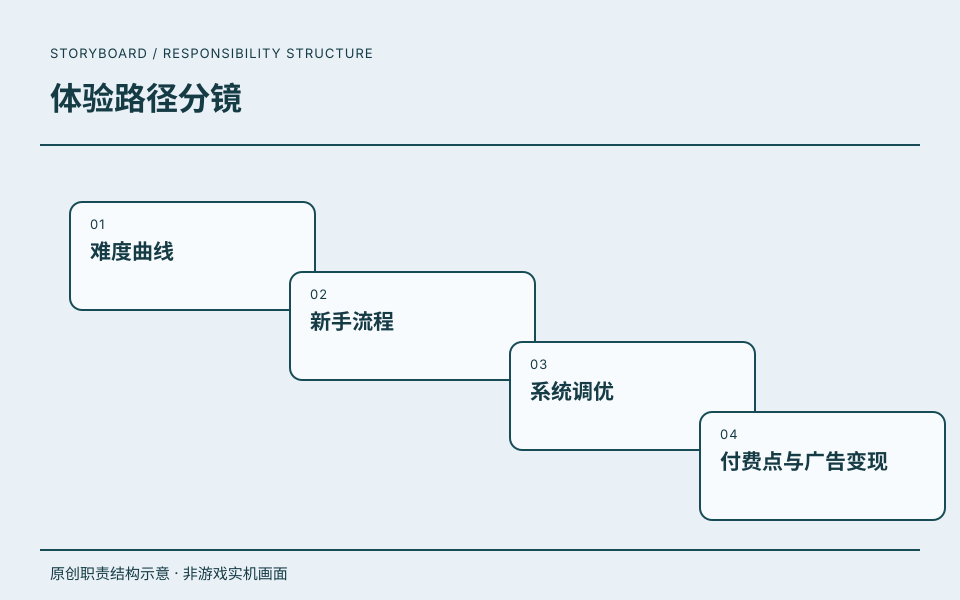

07 / 体验路径分镜
北京星奇畅想科技有限公司.
从新手进入游戏的第一步，到难度节奏、系统调整与变现设计。

主策划
从新手进入游戏的第一步，到难度节奏、系统调整与变现设计。
工作职责
- 01难度曲线
- 02新手流程
- 03系统调优
- 04付费点与广告变现
项目详情
任职记录
从新手进入游戏的第一步，到难度节奏、系统调整与变现设计。
- 任职公司
- 北京星奇畅想科技有限公司
- 角色
- 主策划
- 时间
- 2019.11—2020.03
任职、角色与职责依据本人履历及确认。图示是本站原创的职责结构表达。